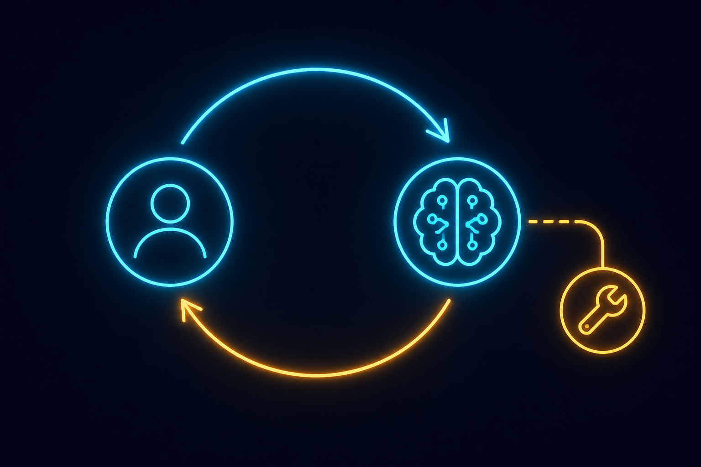

May 2026
L1-L2: Prompts and Tools
The floor everyone thinks is the ceiling.

L1 — The Monkey Layer
L1 is prompt engineering. You write text to an LLM. It writes text back. That's the entire game.
Every "AI agency" you've heard of operates here. The "custom GPT" people. The Vapi voice agent resellers. The GoHighLevel white-labelers. The "AI consultant" who charges $5,000 for a "discovery workshop" and then sells you $1,500/month for a chatbot.
What you're actually buying:
- A system prompt somebody wrote in an afternoon.
- A SaaS subscription (Vapi, Retell, Synthflow, etc.) marked up 4-10x.
- A GoHighLevel dashboard with their logo on it.
- An onboarding call where they ask you the same questions you already answered on the intake form.
The work, when you watch somebody actually do it, is about ten minutes. Maybe an hour if they care. Then it's the dashboard for the next twelve months.
The brand IS the product for them. Nobody in the AI agency space has proprietary voice AI. They're all reselling the same three platforms with different fonts.
What Prompt Engineering Actually Is
L1 is not nothing. A well-written prompt outperforms a badly-written prompt by a huge margin. The skill is real. The problem is that the skill is small.
A good L1 practitioner knows:
- How to structure a system prompt so the model stays on task.
- How to use examples (few-shot) to lock in output format.
- How to prevent the model from refusing reasonable requests.
- How to keep responses short or long as needed.
- Which model handles which kind of input best.
This is honest L1. It is worth maybe a few hundred dollars of setup per use case. It is not worth $35,000.
L2 — Tools
L2 is when the model gets to call functions. The mechanism has different names depending on the platform — function calling, tool use, MCP — but underneath it's the same thing: the model generates structured output, the runtime parses it as a function call, executes the function, and feeds the result back.
Here's the canonical loop, stripped of marketing language:
user: "What's the weather in Tokyo?"
model: { "tool": "get_weather", "args": { "city": "Tokyo" } }
runtime: get_weather("Tokyo") → "18°C, light rain"
model: "It's 18°C and lightly raining in Tokyo right now."
That's L2. The model picks a tool. The runtime runs it. The model uses the result. Repeat for arbitrary capability.
MCP is L2's spec — a clean way to expose tools to any model. It's a great spec. It is also just plumbing. MCP at L2 means "I can call an API." It doesn't make the agent smart. It doesn't make the agent right. It makes the agent reachable.
Why MCP Doesn't Become Powerful Until L4
MCP by itself is a doorway. The model can now talk to your CRM, your calendar, your database. That's capability. Capability is not intelligence.
An L2 agent with MCP will:
- Call the wrong tool with confidently wrong arguments.
- Skip the tool call entirely and hallucinate the result.
- Call the right tool, get a result, and then narrate something that contradicts the result.
- Burn through your API quota chasing a goal that doesn't make sense.
MCP only becomes powerful when you wrap it in L4 harnesses — when the runtime can decide which tools the agent gets, when it gets them, what happens to the results, and how the agent's reasoning gets validated before it acts. The tool layer without the harness layer is a child with a chainsaw.
L2 alone is "the AI can call an API." L4 around L2 is "the AI calls the right API at the right time with the right arguments and the system catches it when it doesn't." Same tools. Different universe.
What L1 + L2 Agencies Are Actually Selling
Strip the branding off and you get this:
SYSTEM PROMPT (L1):
"You are a helpful AI assistant for {business_name}.
When customers ask about hours, say {hours}.
When they want to book, use the booking tool."
TOOLS (L2):
- book_appointment(name, email, date)
- check_availability(date)
- send_sms(phone, message)
That's it. That's the $5K-35K product. A system prompt, three tools wired to Calendly and Twilio, deployed on Vapi or Retell, fronted by a GoHighLevel dashboard, branded with your logo.
The setup takes ten minutes if the agency knows what they're doing. The pricing reflects the brand, not the work.
None of This Is a Scam
L1 and L2 work. For a lot of small businesses, an L1+L2 voice agent is a real upgrade — it answers calls 24/7, books appointments, qualifies leads. The thing it replaces is "nobody picks up the phone after 5pm." The thing it replaces costs them sales.
The problem isn't that L1 and L2 don't deliver value. The problem is:
- The price is detached from the work. You're paying for the brand, not the build.
- It doesn't go anywhere. L1 and L2 don't compound. You can't iterate to L5 from an L1 deployment because the abstractions are wrong.
- The agent is permanently stupid. Without L3 context, L4 harness, L5 admissibility, it'll hallucinate, miscall tools, and lose customer trust in ways you'll only notice after it's already cost you.
Where to Go From Here
If you need a voice agent or chatbot right now and you don't want to build, hire an L1+L2 agency. Negotiate the price down by 80%. They'll still make money.
If you're building something that needs to actually know what it's doing — keep going. L3 is next. That's where the agent starts getting a brain.